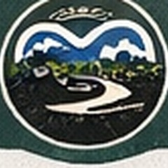

<footer class="site-footer">
  <div class="footer-inner">
    <div>
      <a class="footer-brand" href="index.html">
        
        <span>AutismOverland</span>
      </a>
      <p>Quiet campsites, scenic trails, and safer stops for neurodivergent adventurers.</p>
    </div>

    <div class="footer-links">
      <a href="map.html">Map</a>
      <a href="places.html">Places</a>
      <a href="blog.html">Blog</a>
      <a href="about.html">About</a>
    </div>

    <div class="social-links" aria-label="Social media links">
      <a href="https://instagram.com/AutismOverland" aria-label="Instagram"><i class="fa-brands fa-instagram"></i></a>
      <a href="https://x.com/AutismOverland" aria-label="Twitter / X"><i class="fa-brands fa-x-twitter"></i></a>
      <a href="https://bsky.app/profile/AutismOverland.bsky.social" aria-label="Bluesky"><i class="fa-brands fa-bluesky"></i></a>
      <a href="https://facebook.com/AutismOverland" aria-label="Facebook"><i class="fa-brands fa-facebook-f"></i></a>
    </div>
  </div>

  <div class="footer-bottom">
    <span>© 2026 AutismOverland</span>
    <span>Travel at your own pace.</span>
  </div>
</footer>
